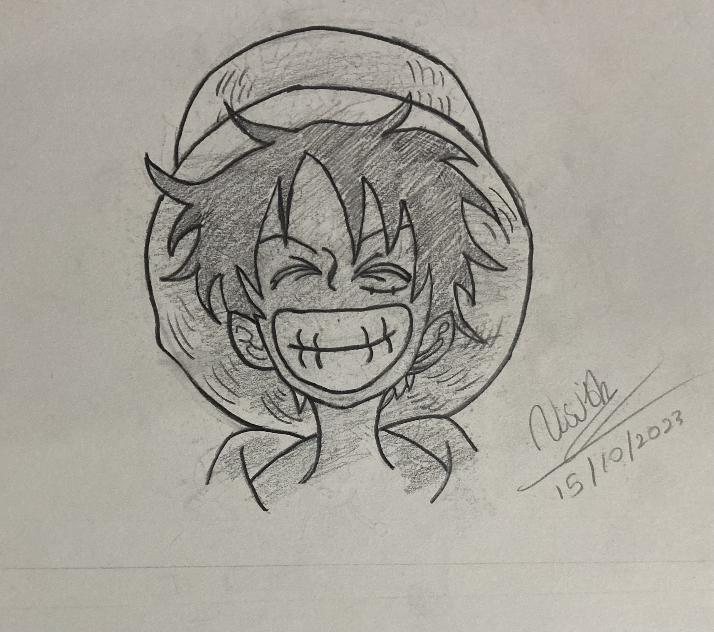
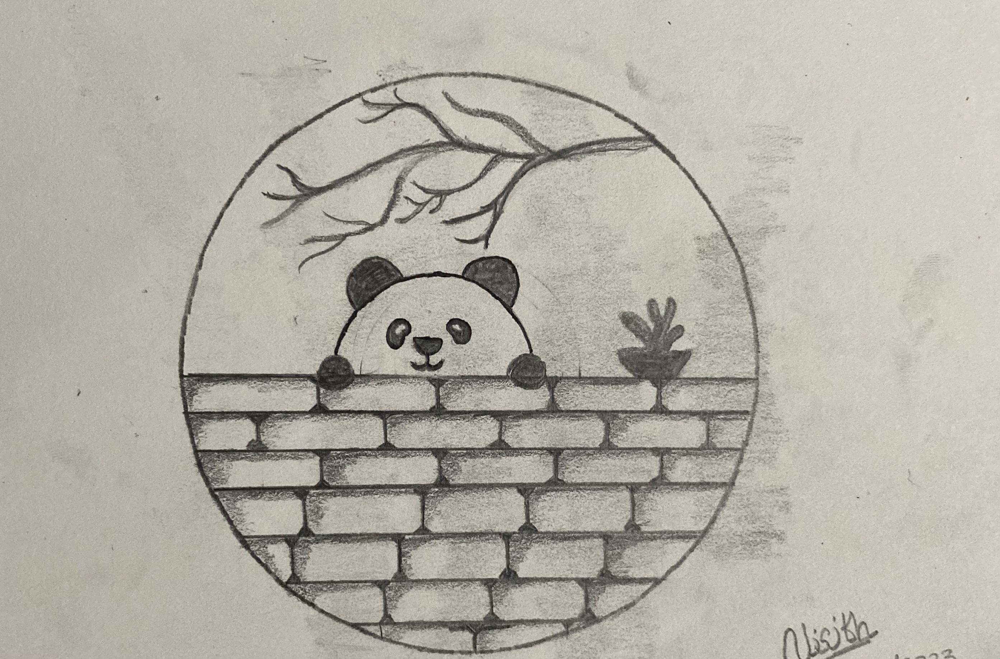
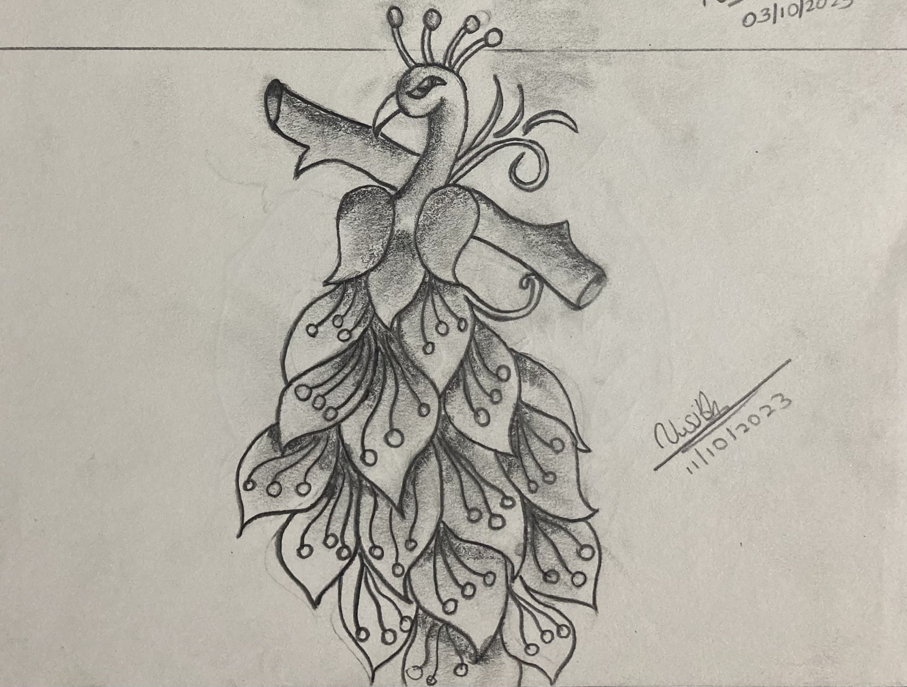
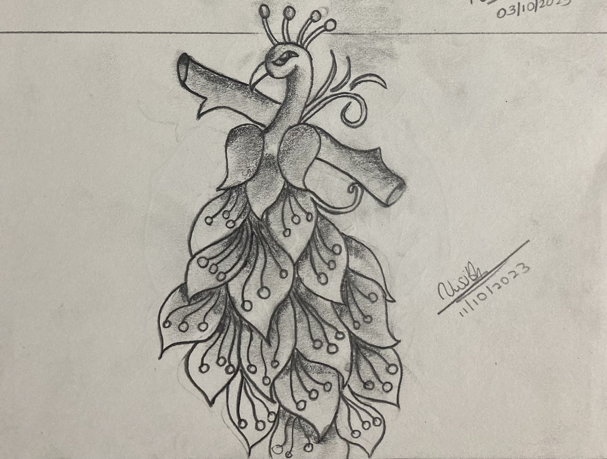
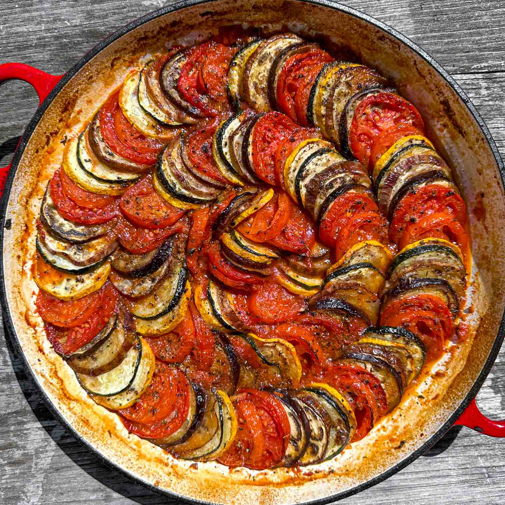
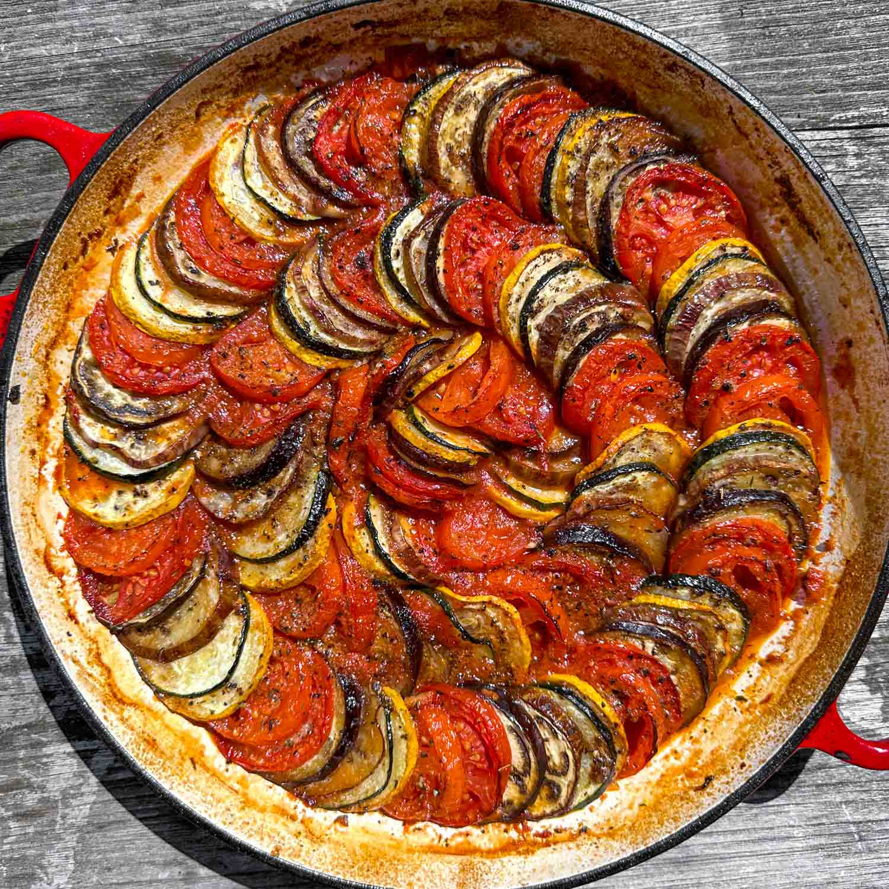

My Skills and Talents
MUSIC & Instrumentals
Since I was small, I had the passion to become a singer and a musician, so
with the influence of my mother (who is presently an Oriental Music Teacher at R/Sumana Balika Vidyalaya, Ratnapura)
I learnt the fundamentals of music and even got to know how to play the instruments like the
guitar, violin, keyboard, piano, recorder and the flute.
And since I loved music a lot I participated to some english, and sinhala singing competitions held at our
school premises and I am pround to say that I have become the winner, 1st runner up, 2nd runner up in each and every one of
those competitions. Similarly, I have participated for some Inter-Dhamma School Bhakthi-Gee programs held at Avissawella.


Drawing Skills
I've had a passionate for drawing since when I was in Grade 5, so what I did was,
I participated to some of my art competitions held at my father's workplace which
is held monthly at their office premises, and then by that I got inspired in drawing that
I started drawing since grade 5, due to the Covid-19 Pandemic, and since the country was
in full lockdown, I gradually improved my skills of drawing and day by day I became good at it.
Now, I still use to continue my habbit of drawing at some intervals after a lecture has
just finished. Now I'm pround to say that I can draw good, and one of my greatest achievements will be to become an artist someday in my career.
My Drawing skills are based on both physical and digital arts as well.


 

Culinary Skills
My Culinary Skills have developed through time, since when I was 4 years old I had a passion in cooking,
so with time I learnt new cooking recipies and I learnt on how to make my cooking ideas a reality by making all sorts of new
food items that are both very healthy and some which are unhealthy as well.
Now since I'm really into cooking, I am the one who is supposed to make birthday cakes for my family when their is a
birthday or any special occasion.


 
